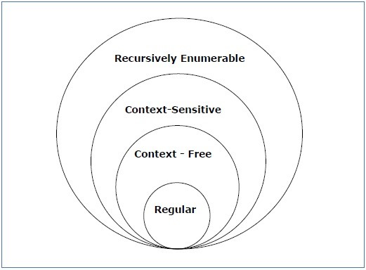

A formal language is one which is designed to be used in a situation where natural language cannot be used – for example when communicating with a computer. It is much more strictly structured and less complex and ambiguous than a natural language. Formal languages are everywhere and have been around for a long time. Here are some examples:
• The set of dates in the form 'DD/MM/YYYY'.
• Your name in the form 'Joe W. Bloggs'.
• Arithmetic expressions such as ‘1+3’ or ‘(4x5)+2’.
• Predicates of first-order logic, for example ‘∀x.(x=y)’.
• Computer programming languages such as Java and C.
A formal language is made up of a set of atomic symbols called tokens, and a set of sentences, which are strings of these tokens. Some example tokens are shown below:
• 0, 1, 2, 3, …
• +, -, ÷, x, …
• +, -, ÷, x, …
• α, β, γ, . . .
In a programming language such as C, the keywords ‘if’, ‘then’ and ‘else’ might be considered as tokens, and the process carried out by the compiler to check that a source program is made up of only accepted tokens is called lexical analysis.
But how do we define a formal language? One way is to use regular expressions or regexes. A regex determines the language by specifying the set of sentences that can be accepted. Here is some syntax followed by examples of regular expressions:
| . | Matches any single character except newline. |
| R* | Matches zero or more occurences of R. |
| [] | Matches any character inside the brackets. This can be negated using the circumflex ‘^’ inside the brackets. |
| [0-9] | Match any character in the range 0 to 9. This works on any range of ASCII characters. |
| ^ | Matches the beginning of a line or as negation when used inside square brackets. |
| $ | Matches the end of a line. |
| {x} | Where x is a number, it tells us how many times the previous pattern can match, and using {x, y} we can say it can match between x and y times. |
| \ | Used to escape a meta-character. For example \* denotes an asterisk. |
| R+ | Matches one or more occurrences of R. |
| R? | Matches zero or more occurrences of R. |
| | | Matches that on the left or that on the right, for example X | Y matches X, or Y, but not XY. |
| " " | Everything within the quotation marks is interpreted literally. |
| R/S | Matches R but only if it is followed by S. |
| () | Groups together a series of regexes into one large regex. |
Examples:
• a* - matches the language of possibly empty strings of a. language(a*) = { [ ], a, aa, aaa, …}.
• a*b* - matches the language of possibly empty strings of as followed by bs. language(a*b*) = { [ ], a, aa, aaa, …, b, bb, bbb, …, ab, abb, aab, aabb, … }.
• [a-z]+[\.\?!] – matches one or more lowercase letters from the alphabet, followed by a full stop, a question mark or an exclamation mark. ‘hi!’ would be accepted but ‘hi’ or ‘hi,’ would not.
A great way to test your skills with regexes is using online tester ‘Regex Pal’ at the following URL: http://www.regexpal.com/.
Another way to generate a formal language is by using formal grammars. These can be used to define which sentences can be accepted by the language and to generate example sentences in the language. First, we must break down the set of tokens or vocabulary of the language V into two distinct sets – terminal symbols and nonterminal symbols. A nonterminal symbol is one which can be broken down into some other arrangement of terminal and/or nonterminal symbols and a terminal symbol is one which can not be broken down any more and is a concrete part of a sentence. A grammar is made up of 4 things:
• N – a set of nonterminal symbols; usually denoted A, B, C, …
• T – a set of terminal symbols; usually denoted a, b, c, …
• S – A start symbol, which is in N.
• P – A set of production rules α ::= β.
The language a* (the set of possibly empty strings of a) described above can be defined using a formal grammar in the following way:
S ::= aS | ε Start Symbol: S
It can be seen here that from the start symbol S, there are only two options for strings of characters; either a single a which recursively returns to S and starts again, or the epsilon symbol ‘ε’ which means the empty string. The string aaa is accepted in the following way:
S => aS => aaS => aaaS => aaa
The start symbol must be explicitly made clear as has been shown above with ‘Start Symbol: S’.
There are many different types of grammars, each of which is effective in different situations. These are defined using the Chomsky classification of Grammars, which splits them up into four different types:
Type 0 Grammars
These are the most common and generate recursively enumerable languages. There are no restrictions on what a type 0 grammar can be and they have productions of the form:
α ::= β
where α is a nonempty string of nonterminal and terminal symbols with at least one nonterminal.
Type 1 (Context Sensitive) Grammars
These have productions of the following form:
α A β ::= α γ β
which means the nonterminal A can be expanded to the string of terminal and/or nonterminal symbols γ as long as it is in the context described by α and β.
Type 2 (Context Free) Grammars
These grammars have productions of the form:
A ::= γ
where A is a single nonterminal symbol and γ is a string of terminal and nonterminal symbols. Context free grammars are useful for representing balanced bracketing, which cannot be done with the other grammars described here.
Type 3 (Regular) Grammars
Regular grammars must have a single nonterminal on the left hand side and either a single terminal symbol, a single terminal symbol followed by a single nonterminal, or the empty symbol ε on the right hand side:
A ::= aB
A ::= b
A ::= ε
Regular expressions describe regular grammars. Further clarification on these classifications and examples can be found at reference [1].
The illustration below shows us that the grammars are all related: 
Figure 1 – an illustration of how each of the grammars fit together [1].
All regular grammars can be represented by context free grammars, all context free grammars can be represented by context sensitive grammars and type 3, type 2 and type 1 grammars are all examples of type 0 grammars.
To conclude, a formal language is one which is used in situations where ambiguous languages like natural language cannot be used. A formal language can be represented in many different ways such as through regexes or formal grammars and it can be used to define a structure and a set of rules to the input strings you are providing a computer system. Formal languages are also extremely useful for keeping data consistent (for example when providing dates in the form DD/MM/YYYY) and they help us with many different things that are essential for the implementation of computer software and the use of the electronic computer.
References:
1. Chomsky Classification of Grammars [online]. Available from https://www.tutorialspoint.com/automata_theory/chomsky_classification_of_grammars.htm. [Accessed 01/08/2017].